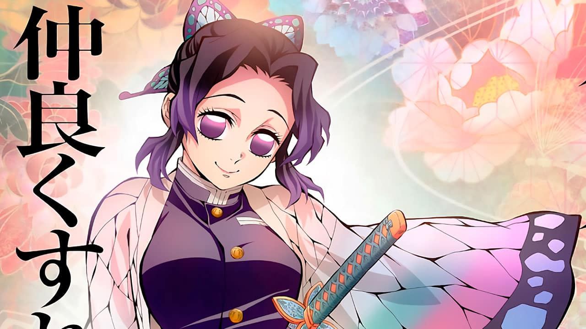
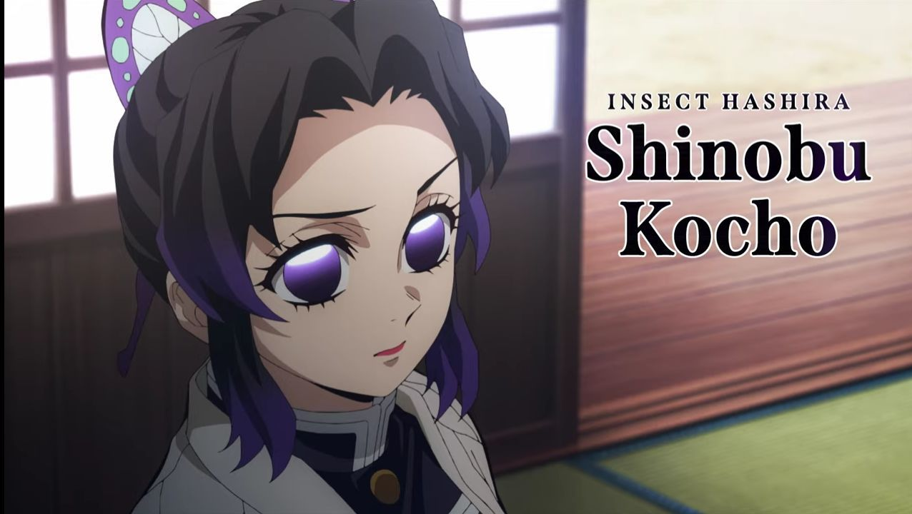

Shinobu Kocho: Hashira dos Insetos em Revelações Impactantes
Em uma reviravolta emocionante para os fãs de “Demon Slayer: Kimetsu no Yaiba”, novos detalhes sobre a enigmática Hashira dos Insetos, Shinobu Kocho, foram revelados, trazendo luz à complexidade de sua personagem e habilidades únicas.
Conhecida por sua aparência doce e comportamento calmo, Shinobu esconde um ódio profundo pelos demônios, alimentado pela perda trágica de sua família e de sua irmã, Kanae Kocho. Apesar de sua estatura pequena e falta de força física, Shinobu compensa com sua inteligência aguçada e velocidade surpreendente, sendo considerada a exterminadora mais rápida entre os Hashiras1.
Desenvolvendo a Respiração do Inseto, uma variação da Respiração da Água e da Flor, Shinobu utiliza uma espada similar ao ferrão de um inseto e venenos letais para imobilizar e derrotar seus inimigos. Seu conhecimento médico também lhe permite encher seu corpo de veneno, tornando-a uma peça crucial na luta contra Muzan.
Os fãs podem esperar ver mais de Shinobu Kocho nas próximas iterações da série, onde sua história e contribuições para o Esquadrão de Exterminadores de Demônios continuarão a ser exploradas. Sua jornada promete ser tão letal quanto fascinante, refletindo a dualidade de sua natureza gentil e sua determinação implacável para vingar sua família.